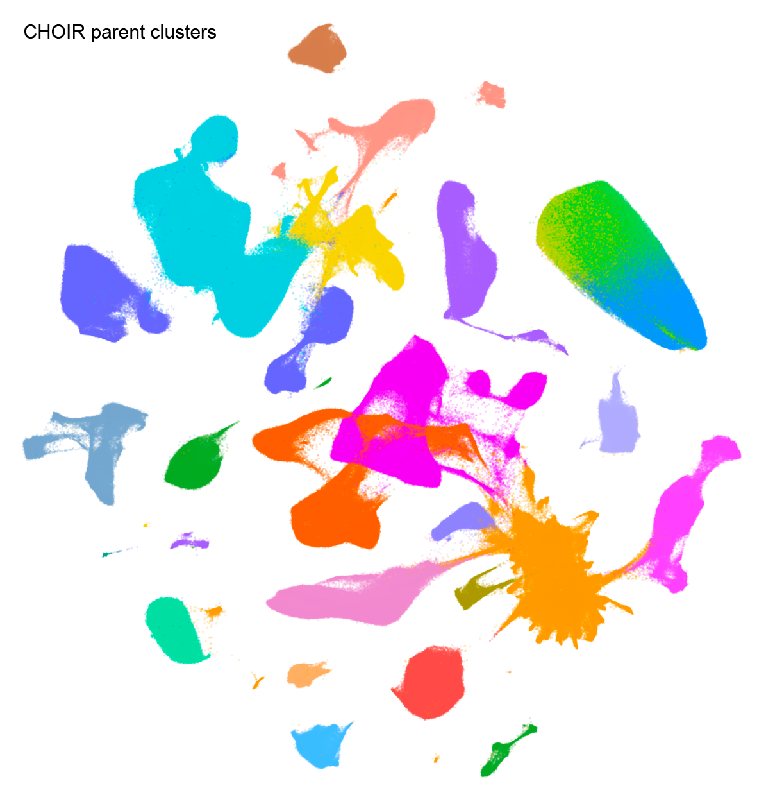
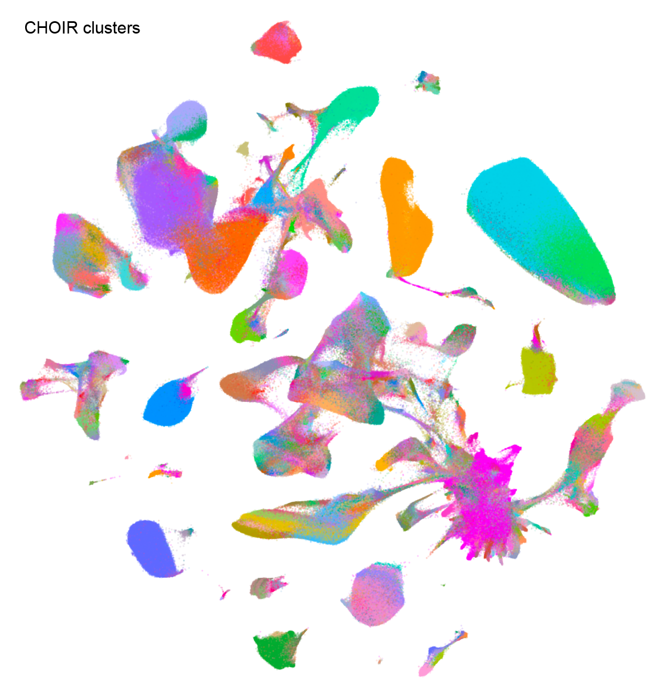
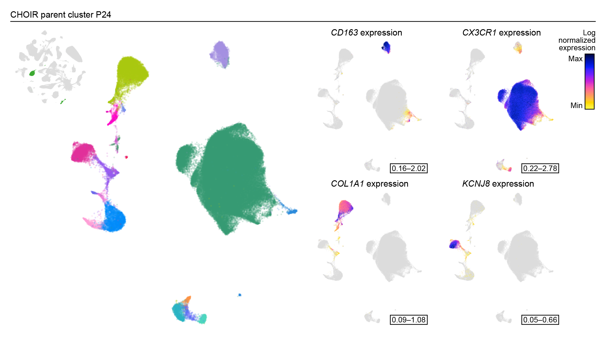

Running CHOIR on atlas-scale data
atlas_scale_data.RmdIntroduction
This vignette provides a basic example of how to run CHOIR on atlas-scale data. Throughout this vignette, sample results will be shown that use human brain atlas data from Siletti et al. 2023 (https://doi.org/10.1126/science.add7046), consisting of ~3.3M cells.
Using CHOIR “straight out of the box” works best on datasets with
under 500,000 cells. While some larger datasets up to 1 million cells
may also run smoothly, other datasets of this size or larger may
encounter computational limits. In general, our assumption as developers
is that end-users who are attempting to analyze datasets larger than
500,000 cells have access to high-performance computational resources
that enable parallelization. At this scale of dataset, annotation of
cell groups can often take weeks of manual effort without the assistance
of a tool like CHOIR. While CHOIR will likely require at least 24 hours
to run on a dataset of 500,000 cells, it will store all of the
information an end-user would need to both annotate clusters and check
the decisions made by CHOIR. Specifically, for each cluster, including
those that were merged along the way, CHOIR stores the features found to
be most important for the cluster (e.g., marker genes) and the reasoning
behind why CHOIR merged or did not merge that cluster. These records can
be found in CHOIR → records → feature_importance_records
and CHOIR → records → comparison_records.
To use CHOIR on atlas-scale data, we recommend a three-step approach that partitions the dataset into smaller relevant chunks (step 1), runs CHOIR in parallel on those smaller chunks (step 2), and then stitches the results back together to provide a final set of clusters (step 3).
You’ll need the following packages:
Step 1: Generate parent clusters
On the full dataset, run the CHOIR function
buildParentTree. This function runs the initial
dimensionality reduction, optional batch correction, and subsequent
steps to generate the “parent” clustering tree. This clustering tree
extends from a single cluster encompassing all cells to the cluster
level at which the silhouette score is maximized.
object <- buildParentTree(object)Step 2: Subset each parent cluster
Subset each parent cluster and save it as a separate object.
# For example
subtree_s <- subset(obj, subset = CHOIR_parent_clusters == "P1")If any of these resulting “parent clusters” are above 450,000 cells, a minimal number of further subdivisions are run on that parent cluster until the resulting subclusters are all under 450,000 cells.
if (ncol(subtree_s) > 450000) {
# Get nearest neighbors
subtree_s <- subtree_s %>%
FindVariableFeatures() %>%
ScaleData() %>%
RunPCA() %>%
FindNeighbors()
# Find starting resolution
starting_resolution <- CHOIR:::.getStartingResolution(subtree_s@graphs$RNA_snn,
cluster_params = list(algorithm = 1,
group.singletons = TRUE),
random_seed = 1,
verbose = TRUE)
# Get clusters at starting resolution
subtree_s <- FindClusters(subtree_s, resolution = starting_resolution[["starting_resolution"]])
# Further subset each resulting cluster
subtree_s_0 <- subset(subtree_s, subset = seurat_clusters == 0)
subtree_s_1 <- subset(subtree_s, subset = seurat_clusters == 1)
# Etc..
}For example, 25 parent clusters resulted from the Siletti et al. 2023 human brain atlas data. Three of those were above 450,000 cells, and were split further prior to step 3.

Step 3: Run CHOIR on each subsetted parent cluster
For each subsetted object:
First, run the standard CHOIR method, but retain the parameter
settings used in buildParentTree, including the
downsampling_rate. This can be done most efficiently using
parallel jobs submitted to an HPC, one per subsetted object.
subtree_s <- CHOIR(subtree_s,
key = "CHOIR_subtree",
downsampling_rate = object@misc$CHOIR$parameters$buildParentTree_parameters$downsampling_rate)If any parent clusters cannot be subclustered further, instead run the following code:
# Add cluster labels for a single cluster
subtree_x@misc$CHOIR_subtree$clusters <- data.frame(CellID = colnames(subtree_x),
CHOIR_clusters_0.05 = 1,
Record_cluster_label = "P0_L0_1")
# Add parameter records matching remaining subtrees
subtree_x@misc$CHOIR_subtree$parameters <- subtree_s@misc$CHOIR$parametersFor example, parent cluster P## from the Siletti et al. 2023 human brain atlas data was composed of ### cells from a single batch, and did not require further subclustering.
Then, extract the resulting clusters, clustering trees, and
comparison records using the CHOIR function getRecords.
subtree_records_list <- vector(mode = "list", length = n_subtrees)
for (s in 1:n_subtrees) {
subtree_records_list[[s]] <- getRecords(subtree_objects_list[[s]], key = "CHOIR_subtree")
}Step 3: Combine subtrees and standardize significance thresholds
Run the CHOIR function combineTrees on the complete set
of records extracted in step 2. In doing so, the significance threshold
will be standardized across all clustering trees, yielding a final set
of clusters.
object <- combineTrees(object,
subtree_list = subtree_records_list)Plot
After clustering has finished, we can generate a UMAP dimensionality
reduction and use function plotCHOIR to plot a
visualization of the clusters.
# Run UMAP
object <- runCHOIRumap(object,
reduction = "P0_reduction")
# Plot
plotCHOIR(object)Here is an example using human brain atlas data from Siletti et al. 2023.

For more granularity, subsets of clusters can be visualized using each subtree dimensionality reduction.
# Run UMAP
object <- runCHOIRumap(object,
reduction = "P24_reduction")
# Plot
plotCHOIR(object, reduction = "P24_reduction_UMAP")This example shows parent cluster P24 from the human brain atlas data from Siletti et al. 2023, which includes clusters corresponding to macrophages, microglia, fibroblasts, and pericytes, among other cell types.
